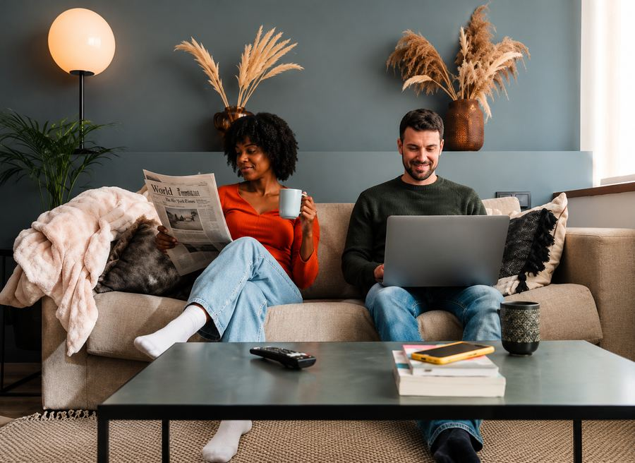
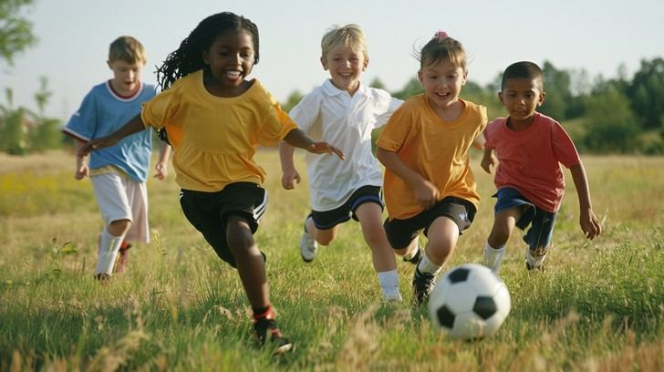
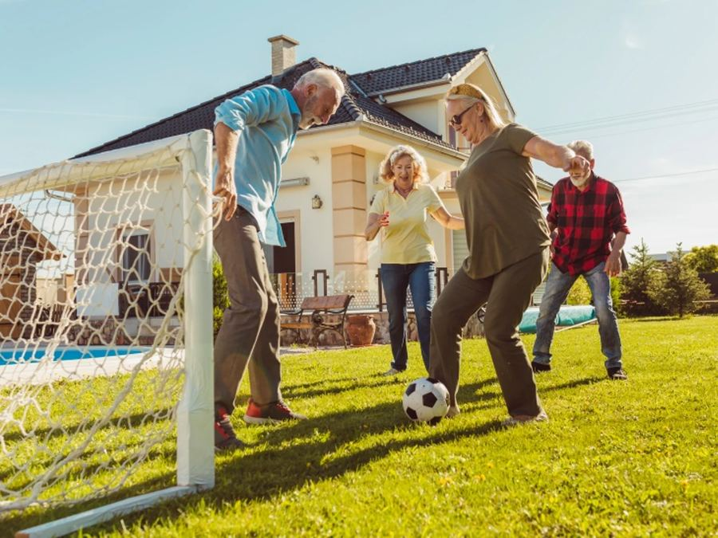

Aptis Speaking
Part 1: In this part, I am going to ask you three short questions about yourself and your interests. You will have 30 seconds to reply to each question.
1. What sports do people play in your country?
=> People in my country play many sports, such as football, badminton and volleyball. Football is probably the most popular one, especially among young people. Many people also play sports early in the morning to stay healthy.
2. What sports do you like?
=> I like playing badminton because it is fun and good for my health. I usually play it with my friends twice a week. It also helps me relieve stress after work.
3. What is your favourite sport?
=> My favourite sport is badminton. I often play it with my friends at the weekend. We usually play at a court near my house. Winning a match always makes me feel very excited.
Part 2: In this part, I'm going to ask you to describe a picture. Then I will ask you two questions about it. You will have 45 seconds for each response.
 |
1. Describe the picture In the picture, I can see a couple at home. They are sitting on a sofa. The woman is reading newspaper and the man is working on a laptop. They are wearing casual clothes and look happy. In the room, I can see some decorations. On the table, I can see a book and a mobile phone. |
2. How do you usually get your daily news?
=> I usually get my daily news from TV, newspapers, and the Internet, especially social networking site. It is fast and convenient. It helps me update information and broaden in my mind. For example, I often check the news on my phone during breakfast. This way, I never miss any important events.
3. Do you think traditional newspapers will disappear in the future? Why or why not?
=> I think traditional newspapers will disappear in the future because most people read news on their mobile phones. It is fast and affordable. They can save time and money.
Also, it is more convenient. They can read anywhere at any time. For instance, my father now reads news on his phone instead of buying a newspaper every morning. I think this trend will continue in the future.
Part 3: In this part, I'm going to ask you to compare two pictures, and I will then ask you two questions about them. You will have 45 seconds for each response.
1. Tell me what you can see in these two pictures.


=> The two pictures show people playing football in different places
- In the first picture, I can see some children. They are playing football in the park. They look strong and excited.
- In the second picture, I can see some old people. They are playing football in front of their house. They look happy.
- the people in both pictures love playing sports and I think they are enjoying their time. Playing football brings people of all ages together. I think this kind of activity is good for both health and friendship.
2. Do you think football has an age limit?
=> I think football has an age limit. People have to run a lot. If they are not strong enough, they will feel very tired and not good for their health. Young people can play football. Old people can walk or jogging. For example, my grandfather stopped playing football when he turned 60. Now he just watches matches on TV instead.
3. Is football popular in your country?
=> Yes, it is. It is popular with many people. It is fun and useful. It helps people relax after a busy day and share happy moments with their friends. Besides, they can improve their health, keep fit and prevent health problems. Many children even dream of becoming professional football players. Every weekend, you can see people playing football in almost every park.
Part 4: Part 4: In this part, I'm going to show you a picture and ask you three questions. You will have 1 minute to think about your answers before you start speaking. You will have 2 minutes to answer all three questions.
Tell me about a time when you wore an important outfit for a special occasion.
Why do people like to dress up or wear formal clothes on special events?
Do you think school uniforms or workplace dress codes are necessary?
=> Regarding the first question, today I'm going to talk about a time when I wore an important outfit for a special occasion. Last year, I wore a suit for my graduation ceremony. I took many photos with my family and friends. I felt very proud wearing that suit in front of my family. It is still one of my favorite memories.
Turning to the second question, people like to wear formal clothes because they look smart and show respect for special events. It also gives people more confidence when they meet others.
About the last question, I think school uniforms and workplace dress codes are necessary. They make everyone look neat and create a professional environment. Uniforms also help students feel equal, no matter their family's income.